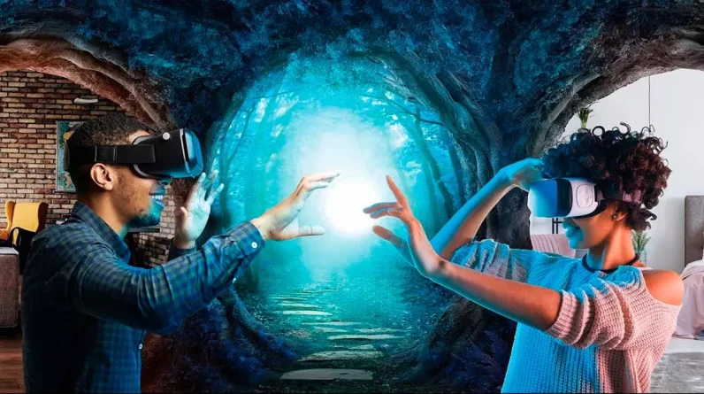

What is HoloGuize?
HoloGuize is a hardware and software package providing cutting edge, and immersive virtual/augmented reality. HoloGuize users can communicate with eachother in real-time by projecting themselves into eachothers physical rooms or virtual spaces.
HoloGuize contains:
How does HoloGuize work?
HoloGuize contains an integrated social media platform for communicating with your friends, family or work collegues. It supports both private, or group chats. The Augmented reality option allows users to view their surroundings with virtual objects and people layered on top. This is achieved using a camera outside the headset. Users can scan themselves as a digital avatar using the provided room cameras. Other users will see these extremely realistic avatars in Augmented Reality. The room cameras can track your movements and location in the room. The HoloGuize Streaming Box is a dedicated computer system designed to render objects and virtual environments in real-time with unprecedented detail. The software in HoloGuize is extremely intelligent. It has object recognition and spacial awareness for accurate AR. It can even change your avatars lighting to match the other users room, and record your facial expressions. The Haptic Feedback suit allows you to feel/interact with virtual objects and people too.
Why HoloGuize?
For years, our company has been looking at utilizing existing VR technologies to provide a better means of communication with other people. Currently, one of the biggest issues introduced by the COVID-19 pandemic was the inability to socialize and engage with others physically due to isolating at home or inability to travel. While we have means of communication such as video, phone, and text, these mediums are generally not immersive or tangible. While there are emerging VR social platforms already, we believe our integrated and low profile design will provide the best social VR/AR experience.